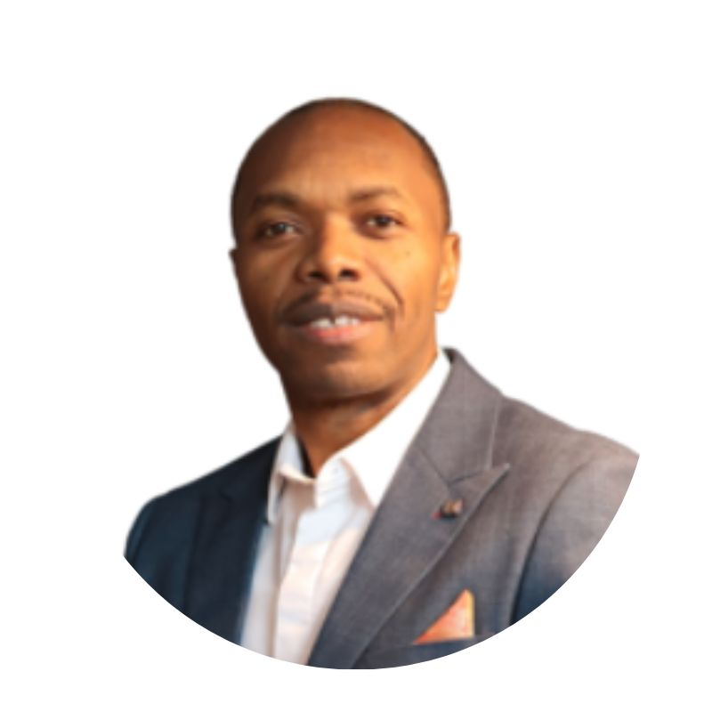

I'm Jose Ernest. Organizations bring me in to embed security by design, automate it into their delivery pipelines, and build AI-powered tooling that eliminates entire classes of vulnerabilities — turning security risk into resilience.

I bring 15 years across IT and security and a Master's in Cybersecurity & Information Assurance — with deep focus on secure software design, security automation, and AI development.
Through UNIFOSEC, I partner with engineering and product teams to solve real security problems: I designed, built, and shipped ADATT, a commercial identity-security platform now used by IT teams and MSPs. I work as a trusted peer to technical leadership — owning threat modeling, least-privilege architecture, secrets handling, secure CI/CD, and audit-ready governance.
If your organization needs to raise its security bar on a specific initiative — an application security review, secure automation, identity security, or an AI-for-security project — that's exactly where I deliver.
Loading…
Loading…
Loading…
Whether it's an application security review, secure automation, identity security, or an AI-for-security initiative — I help organizations turn risk into resilience. Let's talk about your project.
Leave a comment
Sign in with GitHub to leave a public comment — stored in this site's GitHub Discussions.